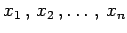
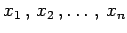

Fehlerarten
Numerische Verfahren sind fehlerbehaftet. Es gibt die folgenden Fehlerarten, aus denen sich der akkumulierte Fehler (Gesamtfehler) des Ergebnisses zusammensetzt:
Eingangsfehler
- 1. Begriff des Eingangsfehlers:
- Eingangsfehler heißt der Fehler des Ergebnisses, der durch fehlerbehaftete Eingangsdaten verursacht wird. Die Bestimmung des Eingangsfehlers aus den Fehlern der Eingangsdaten wird direkte Aufgabe der Fehlertheorie genannt. Als inverse Aufgabe wird jene bezeichnet, die untersucht, welche Fehler die Eingangsdaten besitzen dürfen, damit ein zugelassener Eingangsfehler des Resultats nicht überschritten wird. Die Abschätzung des Eingangsfehlers ist bei komplexeren Aufgaben sehr kompliziert und kaum durchführbar.
Allgemein gilt für eine zu berechnende reellwertige Funktion y=f(x) mit für den absoluten Eingangsfehler
wenn man für  die TAYLOR-Formel mit linearem Restglied verwendet. Mit
die TAYLOR-Formel mit linearem Restglied verwendet. Mit  werden dabei Zwischenstellen, mit Näherungswerte für  bezeichnet. Unter den Näherungswerten sind hier die fehlerhaften Eingangswerte zu verstehen. In diesem Zusammenhang ist auch das GAUSSsche Fehlerfortpflanzungsgesetz zu beachten.
werden dabei Zwischenstellen, mit Näherungswerte für  bezeichnet. Unter den Näherungswerten sind hier die fehlerhaften Eingangswerte zu verstehen. In diesem Zusammenhang ist auch das GAUSSsche Fehlerfortpflanzungsgesetz zu beachten.
- 2. Eingangsfehler für einfache arithmetische Operationen:
- Für einfache arithmetische Operationen sind die Eingangsfehler bekannt. Mit den Bezeichnungen
erhält man für die vier Grundrechenoperationen:
 |
(19.281) |
Die Formeln zeigen: Kleine relative Fehler der Eingangsdaten bewirken bei Multiplikation und Division nur kleine relative Fehler des Ergebnisses. Bei Addition und Subtraktion kann dagegen der relative Fehler von Summe und Differenz groß werden, wenn gilt. Dann besteht die Gefahr der Stellenauslöschung.
Verfahrensfehler:
- 1. Verfahrensfehler:
- Verfahrensfehler leiten sich aus der Notwendigkeit ab, daß Kontinuum und Grenzwert numerisch approximiert werden müssen. Daraus ergeben sich Abbruchfehler bei Grenzprozessen (wie z.B. bei Iterationsverfahren) und Diskretisierungsfehler bei der Approximation des Kontinuums durch ein endliches diskretes System (wie z.B. bei der numerischen Integration). Verfahrensfehler existieren unabhängig von Eingangs- und Rundungsfehlern; sie können deshalb nur im Zusammenhang mit dem verwendeten Lösungsverfahren untersucht werden.
- 2. Verhalten bei bei Iterationsverfahren:
- Wird ein Iterationsverfahren zur Lösung eingesetzt, so muß man sich bewußt sein, daß prinzipiell die beiden Fälle Ausgabe einer richtigen Lösung und Ausgabe einer falschen Lösung möglich sind. Es kann jedoch auch der kritische Fall auftreten, daß keine Lösung gefunden wurde, obwohl eine existiert.
Um Iterationsverfahren transparenter und sicherer zu machen, sollten folgende Empfehlungen beachtet werden:
-
Um ,,endlose`` Iterationen zu verhindern, sollte die Anzahl der Iterationsschritte gezählt und in die Abbruchbedingung einbezogen werden (Abbruch nach einer bestimmten Anzahl von Iterationszyklen auch dann, wenn die geforderte Genauigkeit noch nicht erreicht wurde).
-
Verfolgung der Lösungsentwicklung auf dem Bildschirm durch die numerische oder graphische Ausgabe von Zwischenergebnissen.
-
Nutzung evtl. bekannter Eigenschaften der Problemlösung wie Gradient, Monotonie usw.
-
Untersuchung der Möglichkeit der Skalierung von Variablen bzw. Funktionen.
-
Durchführung mehrerer Tests durch Variation von Schrittweite, Abbruchbedingung, Startwerten usw.
Rundungsfehler:
Rundungsfehler entstehen dadurch, daß Zwischenergebnisse gerundet werden müssen. Sie sind demnach für die Beurteilung eines mathematischen Verfahrens bezüglich der erzielbaren Genauigkeit der Resultate von wesentlicher Bedeutung. Sie entscheiden neben den Eingangs- und Verfahrensfehlern darüber, ob ein numerisches Verfahren stark stabil, schwach stabil oder instabil ist. Starke Stabilität und schwache Stabilität oder Instabilität liegen vor, wenn der Gesamtfehler mit wachsender Schrittzahl abnimmt, von gleicher Größenordnung bleibt oder anwächst.
Bei der Instabilität unterscheidet man die Anfälligkeit gegen Rundungs- und Diskretisierungsfehler (numerische Instabilität) und gegen Fehler in den Ausgangsdaten bei exakter Rechnung (natürliche Instabilität). Ein Rechenprozeß ist dann sinnvoll, wenn die numerische Instabilität nicht größer als die natürliche Instabilität ist.
Für die lokale Fortpflanzung von Rundungsfehlern, d.h., es werden die Rundungsfehler betrachtet, die beim Übergang von einem Rechenschritt zum nächsten auftreten, gelten dieselben Überlegungen und Abschätzungen, wie sie für die Eingangsfehler angestellt worden sind.